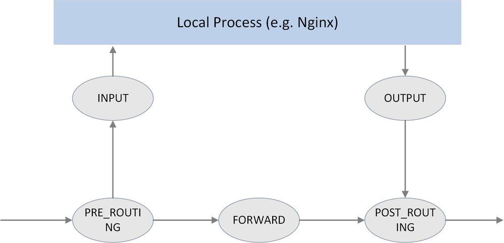
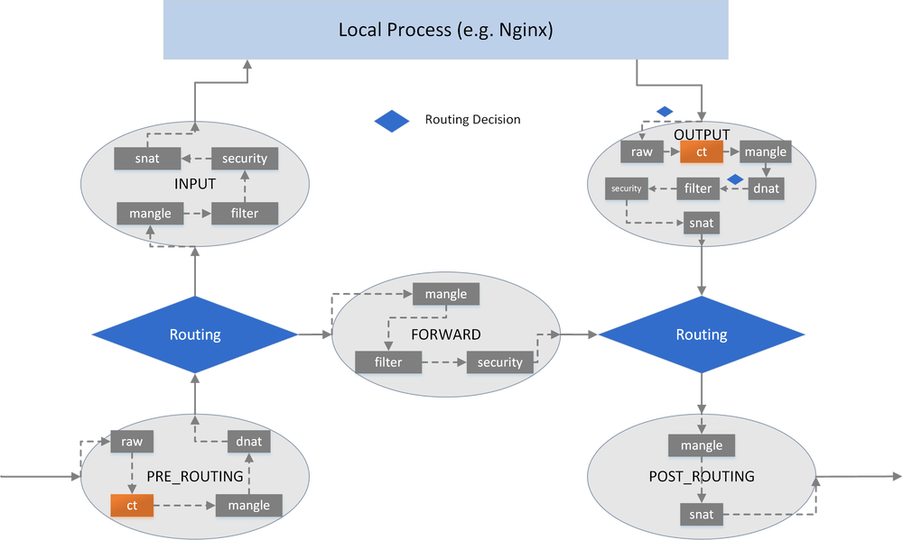
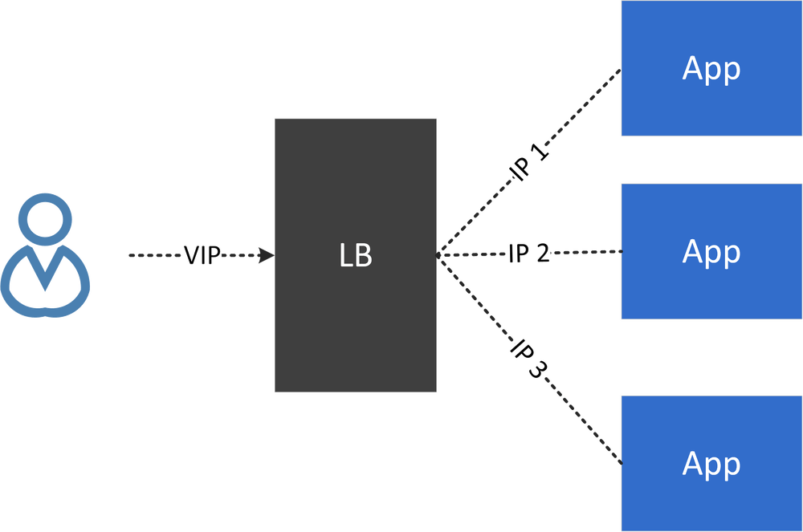
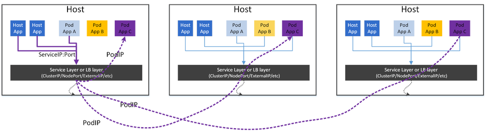
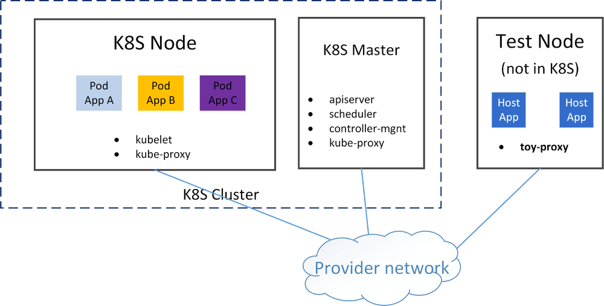
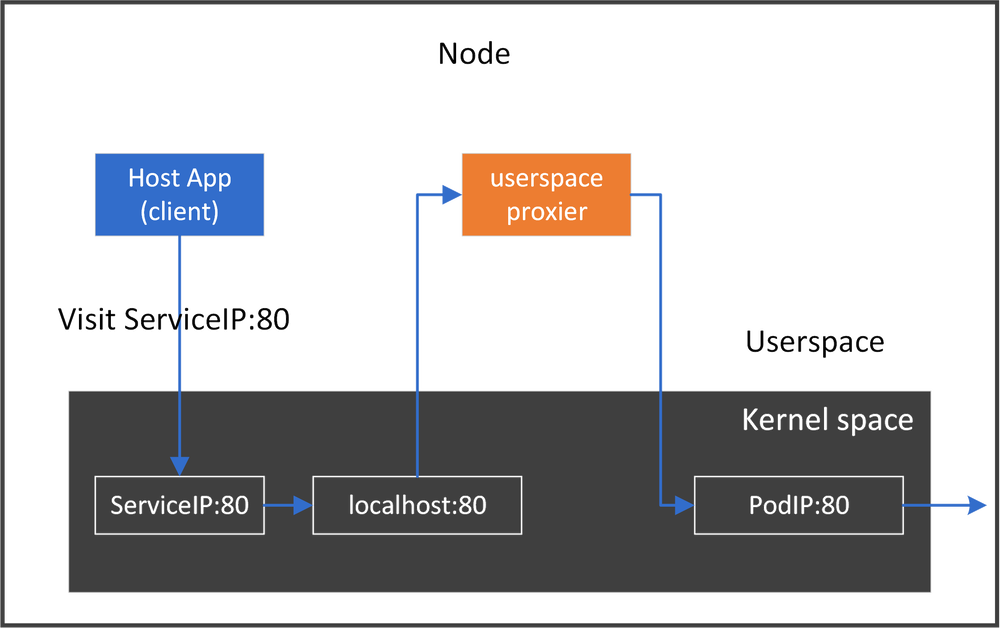
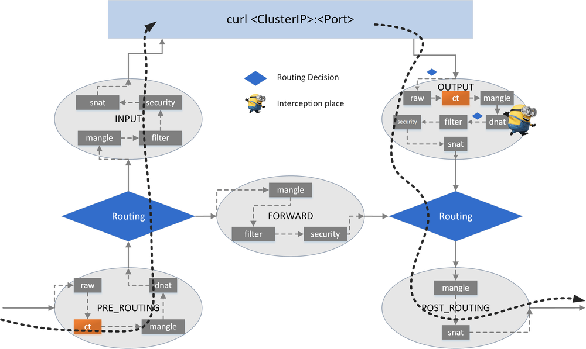
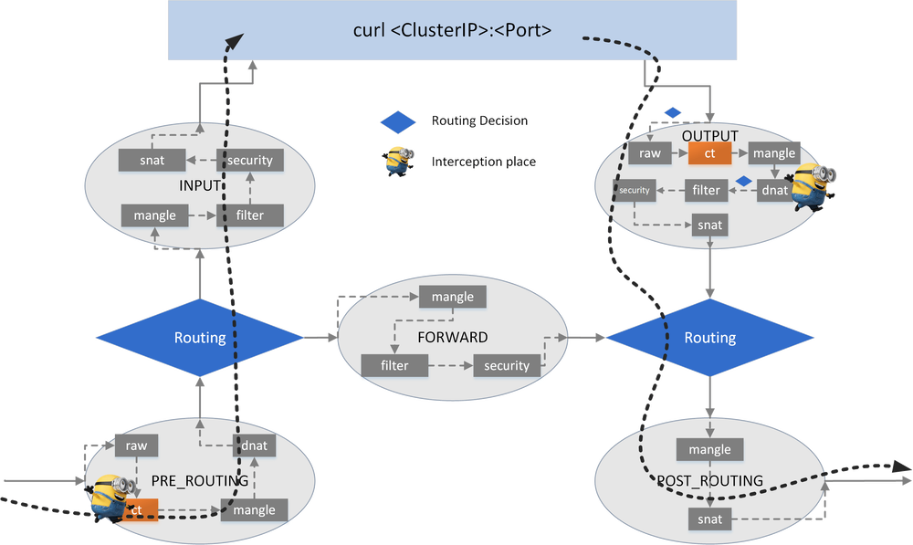
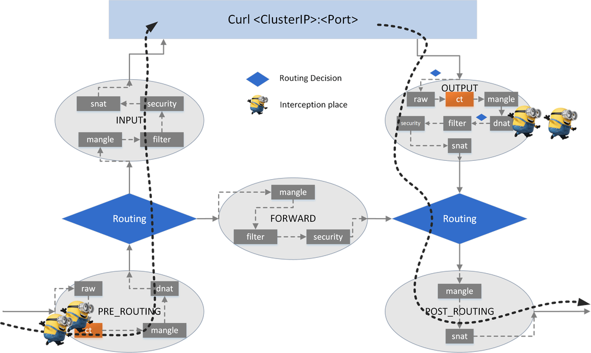
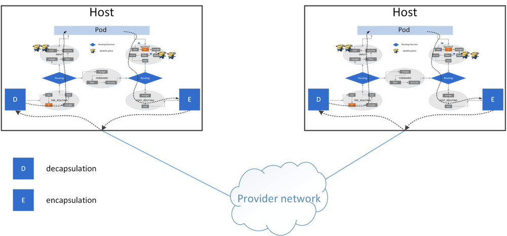

本文译自 Cracking kubernetes node proxy (aka kube-proxy)。
Kubernetes 中有几种类型的代理。其中有 node proxier 或 kube-proxy，它在每个节点上反映 Kubernetes API 中定义的服务，可以跨一组后端执行简单的 TCP/UDP/SCTP 流转发 [1]。
为了更好地理解节点代理模型，在这篇文章中，我们将用不同的方法设计和实现我们自己版本的 kube-proxy; 尽管这些只是 toy-proxy，但从透明流量拦截、转发、负载均衡等方面来说，它们的工作方式与 K8S 集群中运行的普通 kube-proxy 基本相同。
通过我们的 toy-proxy 程序，非 K8S 节点（不在 K8S 集群中）上的应用程序（无论是宿主本地应用程序，还是在 VM/容器中运行的应用程序）也可以通过 ClusterIP 访问 K8S 服务 – 注意，在 kubernetes 的设计中，ClusterIP 只能在 K8S 集群节点中访问（在某种意义上，我们的 toy-proxy 程序将非 K8S 节点变成了 K8S 节点）。
背景知识
了解 Linux 内核中的流量拦截和代理需要具备以下背景知识。
Netfilter
Netfilter 是 Linux 内核内部的包过滤和处理框架。如果你不熟悉 Iptables 和 Netfilter 体系结构，请参阅 A Deep Dive into Iptables and Netfilter Architecture
一些要点：
- 主机上的所有数据包都将通过 netfilter 框架
- 在 netfilter 框架中有 5 个钩子点：
PRE_ROUTING,INPUT,FORWARD,OUTPUT,POST_ROUTING - 命令行工具
iptables可用于动态地将规则插入到钩子点中 - 可以通过组合各种
iptables规则来操作数据包（接受/重定向/删除/修改，等等）
 此外，这 5 个钩子点还可以与内核的其他网络设施，如内核路由子系统进行协同工作。
此外，在每个钩子点中，规则被组织到具有预定义优先级的不同链中。为了按目的管理链，链被进一步组织到表中。现在有 5 个表：
filter：做正常的过滤，如接受，拒绝/删，跳nat：网络地址转换，包括 SNAT（源 nat) 和 DNAT（目的 nat)mangle：修改包属性，例如 TTLraw：最早的处理点，连接跟踪前的特殊处理 (conntrack 或 CT，也包含在上图中，但这不是链）security：本文未涉及
将表/链添加到上图中，我们可以得到更详细的视图：

VIP 与负载均衡 (LB)
虚拟 IP (IP) 将所有后端 IP 隐藏给客户端/用户，因此客户端/用户总是与 VIP 的后端服务通信，而不需要关心 VIP 后面有多少实例。
VIP 总是伴随着负载均衡，因为它需要在不同的后端之间分配流量。

Cross-host 网络模型
主机 A 上的实例（容器、VM 等）如何与主机 B 上的另一个实例通信？有很多解决方案：
- 直接路由：BGP 等
- 隧道：VxLAN, IPIP, GRE 等
- NAT：例如 docker 的桥接网络模式
- 其它方式
节点代理模型
在 kubernetes 中，你可以将应用程序定义为 Service。Service 是一种抽象，它定义了一组 pod 的逻辑集和访问它们的策略。
Service 类型
K8S 中定义了 4 种 Service 类型：
ClusterIP：通过 VIP 访问 Service，但该 VIP 只能在此集群内访问NodePort：通过 NodeIP:NodePort 访问 Service，这意味着该端口将暴露在集群内的所有节点上ExternalIP：与ClusterIP相同，但是这个 VIP 可以从这个集群之外访问LoadBalancer
这篇文章将关注 ClusterIP，但是其他三种类型在流量拦截和转发方面的底层实现非常相似。
节点代理
一个 Service 有一个 VIP（本文中的 ClusterIP）和多个端点（后端 pod）。每个 pod 或节点都可以通过 VIP 直接访问应用程序。要做到这一点，节点代理程序需要在每个节点上运行，它应该能够透明地拦截到任何 ClusterIP:Port[注解 1] 的流量，并将它们重定向到一个或多个后端 pod。

注解 1：
对
ClusterIP的一个常见误解是，ClusterIP是可访问的——它们不是通过定义访问的。如果 ping 一个ClusterIP，可能会发现它不可访问。根据定义，<Protocol,ClusterIP,Port> 元组独特地定义了一个服务（因此也定义了一个拦截规则）。例如，如果一个服务被定义为
<tcp,10.7.0.100,80>，那么代理只处理tcp:10.7.0.100:80的流量，其他流量，例如。tcp:10.7.0.100:8080,udp:10.7.0.100:80将不会被代理。因此，也无法访问 ClusterIP（ICMP 流量）。但是，如果你使用的是带有 IPVS 模式的
kube-proxy，那么确实可以通过 ping 访问ClusterIP。这是因为 IPVS 模式实现比定义所需要的做得更多。你将在下面几节中看到不同之处。
节点代理的角色：反向代理
想想节点代理的作用，在 K8S 网络模型中，它实际上是一个反向代理，也就是说，在每个节点上，它将：
- 将所有后端 pod 隐藏到客户端
- 过滤所有出口流量（对后端的请求）
对于 ingress traffic，它什么也不做。
性能问题
如果我们在主机上有一个应用程序，并且在 K8S 集群中有 1K 个服务，那么我们永远无法猜测该应用程序在下一时刻将访问哪个服务（这里忽略网络策略）。因此，为了让应用程序能够访问所有服务，我们必须为节点上的所有服务应用所有代理规则。将这个想法推广到整个集群，这意味着：
所有服务的代理规则应该应用于整个集群中的所有节点。
在某种意义上，这是一个完全分布式的代理模型，因为任何节点都拥有集群的所有规则。
当集群变大时，这会导致严重的性能问题，因为每个节点上可能有数十万条规则 [6,7]。
测试环境
集群拓扑和测试环境
我们将使用以下环境进行测试：
- 一个 k8s 集群
- 一个 master 节点
- 一个 node 节点
- 网络解决方案：直接路由（PodIP 可直接路由）
- 一个非 k8s 节点，但是它可以到达工作节点和 Pod（得益于直接路由网络方案）

我们将在工作节点上部署 pod，并从 test 节点通过 ClusterIP 访问 pod 中的应用程序。
创建一个 Service
创建一个简单的 Statefulset，其中包括一个 Service，该 Service 将有一个或多个后端 pod:
# see appendix for webapp.yaml
$ kubectl create -f webapp.yaml
$ kubectl get svc -o wide webapp
NAME TYPE CLUSTER-IP EXTERNAL-IP PORT(S) AGE SELECTOR
webapp ClusterIP 10.7.111.132 <none> 80/TCP 2m11s app=webapp
$ kubectl get pod -o wide | grep webapp
webapp-0 2/2 Running 0 2m12s 10.5.41.204 node1 <none> <none>
应用程序在带有 tcp 协议的 80 端口上运行。
可达性测试
首先访问 PodIP+Port:
$ curl 10.5.41.204:80
<!DOCTYPE html>
...
</html>
成功的！然后用 ClusterIP 替换 PodIP 再试一次：
$ curl 10.7.111.132:80
^C
正如所料，它是不可访问的！
在下一节中，我们将研究如何使用不同的方法使 ClusterIP 可访问。
实现：通过 userspace socket 实现 proxy
中间人模型
最容易理解的实现是在此主机上的通信路径中插入我们的 toy-proxy 作为中间人：对于从本地客户端到 ClusterIP:Port 的每个连接，我们拦截该连接并将其分割为两个单独的连接:
- 本地客户端和
toy-proxy之间的连接 - 连接
toy-proxy和后端 pod
实现此目的的最简单方法是在用户空间中实现它：
监听资源：启动一个守护进程，监听 K8S apiserver、监视服务 (ClusterIP) 和端点 (Pod) 的变化代理通信：对于从本地客户端到服务 (ClusterIP) 的每个连接请求，通过充当中间人来拦截请求动态应用代理规则：对于任何 Service/Endpoint 更新，相应地更改toy-proxy连接设置
对于我们上面的测试应用 webapp，数据流程如下图：

POC 实现
让我们来看看上图的概念验证实现。
代码
以下代码省略了一些错误处理代码，便于阅读：
func main() {
clusterIP := "10.7.111.132"
podIP := "10.5.41.204"
port := 80
proto := "tcp"
addRedirectRules(clusterIP, port, proto)
createProxy(podIP, port, proto)
}
func addRedirectRules(clusterIP string, port int, proto string) error {
p := strconv.Itoa(port)
cmd := exec.Command("iptables", "-t", "nat", "-A", "OUTPUT", "-p", "tcp",
"-d", clusterIP, "--dport", p, "-j", "REDIRECT", "--to-port", p)
return cmd.Run()
}
func createProxy(podIP string, port int, proto string) {
host := ""
listener, err := net.Listen(proto, net.JoinHostPort(host, strconv.Itoa(port)))
for {
inConn, err := listener.Accept()
outConn, err := net.Dial(proto, net.JoinHostPort(podIP, strconv.Itoa(port)))
go func(in, out *net.TCPConn) {
var wg sync.WaitGroup
wg.Add(2)
fmt.Printf("Proxying %v <-> %v <-> %v <-> %v\n",
in.RemoteAddr(), in.LocalAddr(), out.LocalAddr(), out.RemoteAddr())
go copyBytes(in, out, &wg)
go copyBytes(out, in, &wg)
wg.Wait()
}(inConn.(*net.TCPConn), outConn.(*net.TCPConn))
}
listener.Close()
}
func copyBytes(dst, src *net.TCPConn, wg *sync.WaitGroup) {
defer wg.Done()
if _, err := io.Copy(dst, src); err != nil {
if !strings.HasSuffix(err.Error(), "use of closed network connection") {
fmt.Printf("io.Copy error: %v", err)
}
}
dst.Close()
src.Close()
}
一些解释
traffic 拦截
我们想拦截所有发往 ClusterIP:Port 的流量，但是在这个节点上任何设备都没有配置ClusterIP，因此我们无法执行诸如 listen（ClusterIP，Port）之类的操作，那么我们如何才能拦截呢？答案是：使用iptables/netfilter 提供的 REDIRECT 能力。
以下命令会将所有发往 ClusterIP:Port 的流量定向到 localhost:Port：
$ sudo iptables -t nat -A OUTPUT -p tcp -d $CLUSTER_IP --dport $PORT -j REDIRECT --to-port $PORT
如果你现在不能理解这一点，不要害怕。稍后我们将讨论这个问题。
通过下面命令的输出来验证这一点：
$ iptables -t nat -L -n
...
Chain OUTPUT (policy ACCEPT)
target prot opt source destination
REDIRECT tcp -- 0.0.0.0/0 10.7.111.132 tcp dpt:80 redir ports 80
在代码中，函数 addRedirectRules() 包装了上述过程。
创建 proxy
函数 createProxy() 创建用户空间代理，并执行双向转发。
可达性测试
编译代码并执行二进制文件：
$ go build toy-proxy-userspace.go
$ sudo ./toy-proxy-userspace
现在测试访问：
$ curl $CLUSTER_IP:$PORT
<!DOCTYPE html>
...
</html>
成功！我们的代理传达的信息是：
$ sudo ./toy-proxy-userspace
Creating proxy between <host ip>:53912 <-> 127.0.0.1:80 <-> <host ip>:40194 <-> 10.5.41.204:80
表示，对于原 <host ip>:53912 <-> 10.7.111.132:80 的连接请求，将其拆分为两个连接：
<host ip>:53912 <-> 127.0.0.1:80<host ip>:40194 <-> 10.5.41.204:80
删除这条规则：
$ iptables -t nat -L -n --line-numbers
...
Chain OUTPUT (policy ACCEPT)
num target prot opt source destination
2 REDIRECT tcp -- 0.0.0.0/0 10.7.111.132 tcp dpt:80 redir ports 80
# iptables -t nat -D OUTPUT <num>
$ iptables -t nat -D OUTPUT 2
或者删除（刷新）所有规则，如果你把 iptabels 弄的一团糟的情况下：
$ iptables -t nat -F # delete all rules
$ iptables -t nat -X # delete all custom chains
改进
在这个 toy-proxy 实现中，我们拦截了 ClusterIP:80 到 localhost:80，但是如果该主机上的本机应用程序也想使用 localhost:80 怎么办？此外，如果多个服务都公开 80 端口会怎样？显然，我们需要区分这些应用程序或服务。解决这个问题的正确方法是：为每个代理分配一个未使用的临时端口 TmpPort，拦截 ClusterIP:Port 到 local:TmpPort。例如，app1 使用 10001, app2 使用 10002。
其次，上面的代码只处理一个后端，如果有多个后端 pod 怎么办？因此，我们需要通过负载均衡算法将请求分发到不同的后端 pod。
优缺点
这种方法非常容易理解和实现，但是，它的性能会很差，因为它必须在两端以及内核和用户空间内存之间复制字节。
我们没有在这上面花太多时间，如果你感兴趣，可以在这里查看用户空间 kube-proxy 的简单实现。
接下来，让我们看看实现这个任务的另一种方法。
实现：通过 iptables 实现 proxy
用户空间代理程序的主要瓶颈来自内核-用户空间切换和数据复制。如果我们可以完全在内核空间中实现代理，它将在性能上大大提高，从而击败用户空间的代理。iptables 可用于实现这一目标。
在开始之前，让我们首先弄清楚在执行 curl ClusterIP:Port 时的流量路径，然后研究如何使用 iptables 规则使其可访问。
Host -> ClusterIP（单一后端）
ClusterIP 不存在于任何网络设备上，所以为了让我们的数据包最终到达后端 Pod，我们需要将 ClusterIP 转换为 PodIP（可路由），即：
- 条件：匹配
dst=ClusterIP,proto=tcp,dport=80的数据包 - 操作：将数据包的 IP 报头中的
dst=ClusterIP替换为dst=PodIP
用网络术语来说，这是一个网络地址转换 (NAT) 过程。
在哪里做 DNAT
通过 curl 查看出口数据包路径（下图展示了数据流向过程）：

<curl process> -> raw -> CT -> mangle -> dnat -> filter -> security -> snat -> <ROUTING> -> mangle -> snat -> NIC
很明显，在 OUTPUT 钩中只有一个 dnat（链），我们可以在其中进行 DNAT。
让我们看看我们将如何进行黑客入侵。
检查当前的 NAT 规则
NAT 规则被组织到 nat 表中。检查 nat 表中的当前规则：
# -t <table>
# -L list rules
# -n numeric output
$ iptables -t nat -L -n
Chain PREROUTING (policy ACCEPT)
Chain INPUT (policy ACCEPT)
Chain OUTPUT (policy ACCEPT)
DOCKER all -- 0.0.0.0/0 !127.0.0.0/8 ADDRTYPE match dst-type LOCAL
Chain POSTROUTING (policy ACCEPT)
输出显示除了与 DOCKER 相关的规则外，没有其他规则。这些 DOCKER 规则是 DOCKER 在安装时插入的，但它们不会影响我们在这篇文章中的实验。所以我们忽略它们。
增加 DNAT 规则
为了便于查看，我们不会用 go 代码包装 iptables 命令，而是直接显示命令本身。
注意：在继续之前，请确保删除了在上一节中添加的所有规则。
确认目前无法访问 ClusterIP：
$ curl $CLUSTER_IP:$PORT
^C
现在添加我们的出口 NAT 规则：
$ cat ENV
CLUSTER_IP=10.7.111.132
POD_IP=10.5.41.204
PORT=80
PROTO=tcp
# -p <protocol>
# -A add rule
# --dport <dst port>
# -d <dst ip>
# -j jump to
# --to-destination <ip>:<port>
$ iptables -t nat -A OUTPUT -p $PROTO --dport $PORT -d $CLUSTER_IP -j DNAT --to-destination $POD_IP:$PORT
再次检查规则表：
$ iptables -t nat -L -n
Chain OUTPUT (policy ACCEPT)
target prot opt source destination
DNAT tcp -- 0.0.0.0/0 10.7.111.132 tcp dpt:80 to:10.5.41.204:80
我们可以看到规则已经被添加。
测试可达性
现在再一次访问：
$ curl $CLUSTER_IP:$PORT
<!DOCTYPE html>
...
</html>
就是这样！访问成功。
但是等等！我们期望出口的交通应该是正确的，但我们没有添加任何 NAT 规则的入口路径，怎么可能交通是正常的两个方向？事实证明，当你为一个方向添加一个 NAT 规则时，Linux 内核会自动为另一个方向添加保留规则！这与 conntrack (CT，连接跟踪）模块协同工作。

清理
删除这些规则：
$ iptables -t nat -L -n --line-numbers
...
Chain OUTPUT (policy ACCEPT)
num target prot opt source destination
2 DNAT tcp -- 0.0.0.0/0 10.7.111.132 tcp dpt:80 to:10.5.41.204:80
# iptables -t <table> -D <chain> <num>
$ iptables -t nat -D OUTPUT 2
Host -> ClusterIP （多个后端）
在上一节中，我们展示了如何使用一个后端 Pod 执行 NAT。现在让我们看看多后端情况。
注意：在继续之前，请确保删除了在上一节中添加的所有规则。
伸缩 webapp
首先扩大我们的服务到 2 个后端 pod:
$ kubectl scale sts webapp --replicas=2
statefulset.apps/webapp scaled
$ kubectl get pod -o wide | grep webapp
webapp-0 2/2 Running 0 1h24m 10.5.41.204 node1 <none> <none>
webapp-1 2/2 Running 0 11s 10.5.41.5 node1 <none> <none>
通过负载平衡添加 DNAT 规则
我们需要 iptables 中的 statistic 模块以概率的方式将请求分发到后端 pod，这样才能达到负载均衡的效果：
# -m <module>
$ iptables -t nat -A OUTPUT -p $PROTO --dport $PORT -d $CLUSTER_IP \
-m statistic --mode random --probability 0.5 \
-j DNAT --to-destination $POD1_IP:$PORT
$ iptables -t nat -A OUTPUT -p $PROTO --dport $PORT -d $CLUSTER_IP \
-m statistic --mode random --probability 1.0 \
-j DNAT --to-destination $POD2_IP:$PORT
上面的命令指定在两个 pod 之间随机分配请求，每个都有 50% 的概率。
现在检查这些规则：
$ iptables -t nat -L -n
...
Chain OUTPUT (policy ACCEPT)
target prot opt source destination
DNAT tcp -- 0.0.0.0/0 10.7.111.132 tcp dpt:80 statistic mode random probability 0.50000000000 to:10.5.41.204:80
DNAT tcp -- 0.0.0.0/0 10.7.111.132 tcp dpt:80 statistic mode random probability 1.00000000000 to:10.5.41.5:80

验证
现在，我们来验证下负载均衡是否生效。我们发出 8 个 请求，并捕获到这个主机通信的真实 PodIPs:
在测试节点上打开一个 shell:
$ for i in {1..8}; do curl $CLUSTER_IP:$PORT 2>&1 >/dev/null; sleep 1; done
测试节点上的另一个 shell 窗口：
$ tcpdump -nn -i eth0 port $PORT | grep "GET /"
10.21.0.7.48306 > 10.5.41.5.80: ... HTTP: GET / HTTP/1.1
10.21.0.7.48308 > 10.5.41.204.80: ... HTTP: GET / HTTP/1.1
10.21.0.7.48310 > 10.5.41.204.80: ... HTTP: GET / HTTP/1.1
10.21.0.7.48312 > 10.5.41.5.80: ... HTTP: GET / HTTP/1.1
10.21.0.7.48314 > 10.5.41.5.80: ... HTTP: GET / HTTP/1.1
10.21.0.7.48316 > 10.5.41.204.80: ... HTTP: GET / HTTP/1.1
10.21.0.7.48318 > 10.5.41.5.80: ... HTTP: GET / HTTP/1.1
10.21.0.7.48320 > 10.5.41.204.80: ... HTTP: GET / HTTP/1.1
在 Pod1 中有 4 次，在 Pod2 中有 4 次，每个 pod 有 50%，这正是我们所期望的。
清理
$ iptables -t nat -L -n --line-numbers
...
Chain OUTPUT (policy ACCEPT)
num target prot opt source destination
2 DNAT tcp -- 0.0.0.0/0 10.7.111.132 tcp dpt:80 statistic mode random probability 0.50000000000 to:10.5.41.204:80
3 DNAT tcp -- 0.0.0.0/0 10.7.111.132 tcp dpt:80 statistic mode random probability 1.00000000000 to:10.5.41.5:80
$ iptables -t nat -D OUTPUT 2
$ iptables -t nat -D OUTPUT 3
Pod (app A) -> ClusterIP (app B)
如果想通过 hostA 上的 Pod A 通过 ClusterIP 访问 Pod B，B 的 Pod 驻留在 hostB 上，我们应该做什么？
实际上，这与 Host -> ClusterIP 情况非常相似，但是有一点需要注意：在执行 NAT 之后，源节点 (hostA) 需要将包发送到目的地 Pod 所在的正确目的地节点 (hostB)。根据不同的跨主机网络解决方案，这有很大不同：
- 对于直接路由的情况下，主机只是发送数据包。对应的有这些解决方案：
- calico + bird
- cilium + kube-router（Cilium BGP 的默认解决方案）
- cilium + bird（实际上这只是我们的测试环境网络解决方案）
- 对于隧道的情况，每个主机上必须有一个代理，它在 DNAT 之后执行 encap，在 SNAT 之前执行 decap。这些解决方案包括：
- calico + VxLAN 模式
- flannel + IPIP 模式
- flannel + VxLAN 模式
- cilium + VxLAN 模式
- 像 aws 的 ENI 模式：类似于直接路由，但不需要 BGP 代理
- cilium + ENI 模式
下图展示了隧道的情况：

代理与隧道相关的职责包括：
- 同步所有节点之间的隧道信息，例如描述哪个实例在哪个节点上的信息
- 在 DNAT 之后对 pod 流量执行封装：对于所有的出口流量，例如来自 hostA 的
dst=<PodIP>，其中 PodIP 在 hostB 上，通过添加另一个头来封装数据包，例如 VxLAN 头，其中封装头有src=hostA_IP,dst=hostB_IP - 在 SNAT 之前对 Pod 流量执行解封装：解封装每个入口封装的数据包：删除外层（例如 VxLAN 标头）
同时，主机需要决定：
- 哪些数据包应该交给解码器（pod 流量），哪些不应该（例如主机流量）
- 哪些包应该封装（pod 流量），哪些不应该（例如主机流量）
重新构造 iptables 规则
注意：在继续之前，请确保删除了在上一节中添加的所有规则。
当你有大量的 Service 时，每个节点上的 iptables 规则将相当复杂，因此你需要进行一些结构化工作来组织这些规则。
在本节中，我们将在 nat 表中创建几个专用的 iptables 链，具体如下：
- 链
KUBE-SERVICES：拦截 nat 表的输出链中所有到此链的出口流量，如果它们被指定为 ClusterIP，则执行 DNAT - 链
KUBE-SVC-WEBAPP：如果dst、proto和port匹配，则拦截该链KUBE-SERVICES中的所有流量 - 链
KUBE-SEP-WEBAPP1：拦截 50% 的流量在KUBE-SVC-WEBAPP到这里 - 链
KUBE-SEP-WEBAPP2：拦截 50% 的流量在KUBE-SVC-WEBAPP到这里
DNAT 路径现在为：
OUTPUT -> KUBE-SERVICES -> KUBE-SVC-WEBAPP --> KUBE-SEP-WEBAPP1
\
\--> KUBE-SEP-WEBAPP2
如果你有多个 Service，DNAT 路径如下：
OUTPUT -> KUBE-SERVICES -> KUBE-SVC-A --> KUBE-SEP-A1
| \--> KUBE-SEP-A2
|
|--> KUBE-SVC-B --> KUBE-SEP-B1
| \--> KUBE-SEP-B2
|
|--> KUBE-SVC-C --> KUBE-SEP-C1
\--> KUBE-SEP-C2
iptables 命令：
$ cat add-dnat-structured.sh
source ../ENV
set -x
KUBE_SVCS="KUBE-SERVICES" # chain that serves as kubernetes service portal
SVC_WEBAPP="KUBE-SVC-WEBAPP" # chain that serves as DNAT entrypoint for webapp
WEBAPP_EP1="KUBE-SEP-WEBAPP1" # chain that performs dnat to pod1
WEBAPP_EP2="KUBE-SEP-WEBAPP2" # chain that performs dnat to pod2
# OUTPUT -> KUBE-SERVICES
sudo iptables -t nat -N $KUBE_SVCS
sudo iptables -t nat -A OUTPUT -p all -s 0.0.0.0/0 -d 0.0.0.0/0 -j $KUBE_SVCS
# KUBE-SERVICES -> KUBE-SVC-WEBAPP
sudo iptables -t nat -N $SVC_WEBAPP
sudo iptables -t nat -A $KUBE_SVCS -p $PROTO -s 0.0.0.0/0 -d $CLUSTER_IP --dport $PORT -j $SVC_WEBAPP
# KUBE-SVC-WEBAPP -> KUBE-SEP-WEBAPP*
sudo iptables -t nat -N $WEBAPP_EP1
sudo iptables -t nat -N $WEBAPP_EP2
sudo iptables -t nat -A $WEBAPP_EP1 -p $PROTO -s 0.0.0.0/0 -d 0.0.0.0/0 --dport $PORT -j DNAT --to-destination $POD1_IP:$PORT
sudo iptables -t nat -A $WEBAPP_EP2 -p $PROTO -s 0.0.0.0/0 -d 0.0.0.0/0 --dport $PORT -j DNAT --to-destination $POD2_IP:$PORT
sudo iptables -t nat -A $SVC_WEBAPP -p $PROTO -s 0.0.0.0/0 -d 0.0.0.0/0 -m statistic --mode random --probability 0.5 -j $WEBAPP_EP1
sudo iptables -t nat -A $SVC_WEBAPP -p $PROTO -s 0.0.0.0/0 -d 0.0.0.0/0 -m statistic --mode random --probability 1.0 -j $WEBAPP_EP2
现在测试我们设计：
$ ./add-dnat-structured.sh
++ KUBE_SVCS=KUBE-SERVICES
++ SVC_WEBAPP=KUBE-SVC-WEBAPP
++ WEBAPP_EP1=KUBE-SEP-WEBAPP1
++ WEBAPP_EP2=KUBE-SEP-WEBAPP2
++ sudo iptables -t nat -N KUBE-SERVICES
++ sudo iptables -t nat -A OUTPUT -p all -s 0.0.0.0/0 -d 0.0.0.0/0 -j KUBE-SERVICES
++ sudo iptables -t nat -N KUBE-SVC-WEBAPP
++ sudo iptables -t nat -A KUBE-SERVICES -p tcp -s 0.0.0.0/0 -d 10.7.111.132 --dport 80 -j KUBE-SVC-WEBAPP
++ sudo iptables -t nat -N KUBE-SEP-WEBAPP1
++ sudo iptables -t nat -N KUBE-SEP-WEBAPP2
++ sudo iptables -t nat -A KUBE-SEP-WEBAPP1 -p tcp -s 0.0.0.0/0 -d 0.0.0.0/0 --dport 80 -j DNAT --to-destination 10.5.41.204:80
++ sudo iptables -t nat -A KUBE-SEP-WEBAPP2 -p tcp -s 0.0.0.0/0 -d 0.0.0.0/0 --dport 80 -j DNAT --to-destination 10.5.41.5:80
++ sudo iptables -t nat -A KUBE-SVC-WEBAPP -p tcp -s 0.0.0.0/0 -d 0.0.0.0/0 -m statistic --mode random --probability 0.5 -j KUBE-SEP-WEBAPP1
++ sudo iptables -t nat -A KUBE-SVC-WEBAPP -p tcp -s 0.0.0.0/0 -d 0.0.0.0/0 -m statistic --mode random --probability 1.0 -j KUBE-SEP-WEBAPP2
检查这些规则：
$ sudo iptables -t nat -L -n
...
Chain OUTPUT (policy ACCEPT)
target prot opt source destination
KUBE-SERVICES all -- 0.0.0.0/0 0.0.0.0/0
Chain KUBE-SEP-WEBAPP1 (1 references)
target prot opt source destination
DNAT tcp -- 0.0.0.0/0 0.0.0.0/0 tcp dpt:80 to:10.5.41.204:80
Chain KUBE-SEP-WEBAPP2 (1 references)
target prot opt source destination
DNAT tcp -- 0.0.0.0/0 0.0.0.0/0 tcp dpt:80 to:10.5.41.5:80
Chain KUBE-SERVICES (1 references)
target prot opt source destination
KUBE-SVC-WEBAPP tcp -- 0.0.0.0/0 10.7.111.132 tcp dpt:80
Chain KUBE-SVC-WEBAPP (1 references)
target prot opt source destination
KUBE-SEP-WEBAPP1 tcp -- 0.0.0.0/0 0.0.0.0/0 statistic mode random probability 0.50000000000
KUBE-SEP-WEBAPP2 tcp -- 0.0.0.0/0 0.0.0.0/0 statistic mode random probability 1.00000000000
$ curl $CLUSTER_IP:$PORT
<!DOCTYPE html>
...
</html>
成功！
如果你将上面的输出与普通的 kube-proxy 规则进行比较，这两个规则是非常相似的，下面是从启用 kube-proxy 的节点提取的：
Chain OUTPUT (policy ACCEPT)
target prot opt source destination
KUBE-SERVICES all -- 0.0.0.0/0 0.0.0.0/0 /* kubernetes service portals */
Chain KUBE-SERVICES (2 references)
target prot opt source destination
KUBE-SVC-YK2SNH4V42VSDWIJ tcp -- 0.0.0.0/0 10.7.22.18 /* default/nginx:web cluster IP */ tcp dpt:80
Chain KUBE-SVC-YK2SNH4V42VSDWIJ (1 references)
target prot opt source destination
KUBE-SEP-GL2BLSI2B4ICU6WH all -- 0.0.0.0/0 0.0.0.0/0 /* default/nginx:web */ statistic mode random probability 0.33332999982
KUBE-SEP-AIRRSG3CIF42U3PX all -- 0.0.0.0/0 0.0.0.0/0 /* default/nginx:web */
Chain KUBE-SEP-GL2BLSI2B4ICU6WH (1 references)
target prot opt source destination
DNAT tcp -- 0.0.0.0/0 0.0.0.0/0 /* default/nginx:web */ tcp to:10.244.3.181:80
Chain KUBE-SEP-AIRRSG3CIF42U3PX (1 references)
target prot opt source destination
DNAT tcp -- 0.0.0.0/0 0.0.0.0/0 /* default/nginx:web */ tcp to:10.244.3.182:80
进一步重新构造 iptables 规则
TODO：为来自集群外部的流量添加规则。
实现：通过 ipvs 实现 proxy
虽然基于 iptables 的代理在性能上优于基于用户空间的代理，但在集群服务过多的情况下也会导致性能严重下降 [6,7]。
本质上，这是因为 iptables 判决是基于链的，它是一个复杂度为 O(n) 的线性算法。iptables 的一个好的替代方案是 IPVS——内核中的 L4 负载均衡器，它在底层使用 ipset（哈希实现），因此复杂度为 O(1)。
让我们看看如何使用 ipvs 实现相同的目标。
注意：在继续之前，请确保删除了在上一节中添加的所有规则。
安装 IPVS
$ yum install -y ipvsadm
# -l list load balancing status
# -n numeric output
$ ipvsadm -ln
Prot LocalAddress:Port Scheduler Flags
-> RemoteAddress:Port Forward Weight ActiveConn InActConn
默认无规则
增加虚拟/真正的 services
使用 ipvs 实现负载均衡：
# -A/--add-service add service
# -t/--tcp-service <address> VIP + Port
# -s <method> scheduling-method
# -r/--real-server <address> real backend IP + Port
# -m masquerading (NAT)
$ ipvsadm -A -t $CLUSTER_IP:$PORT -s rr
$ ipvsadm -a -t $CLUSTER_IP:$PORT -r $POD1_IP -m
$ ipvsadm -a -t $CLUSTER_IP:$PORT -r $POD2_IP -m
或者使用我的脚本：
$ ./ipvs-add-server.sh
Adding virtual server CLUSTER_IP:PORT=10.7.111.132:80 ...
Adding real servers ...
10.7.111.132:80 -> 10.5.41.204
10.7.111.132:80 -> 10.5.41.5
Done
再次检查状态：
$ ipvsadm -ln
Prot LocalAddress:Port Scheduler Flags
-> RemoteAddress:Port Forward Weight ActiveConn InActConn
TCP 10.7.111.132:80 rr
-> 10.5.41.5:80 Masq 1 0 0
-> 10.5.41.204:80 Masq 1 0 0
一些解释：
- 对于所有发往
10.7.111.132:80的流量，将负载均衡到10.5.41.5:80和10.5.41.204:80 - 使用轮询 (rr) 算法实现负载均衡
- 两个后端，每个后端的权重为 1（各 50％）
- 使用 MASQ（增强型 SNAT）在 VIP 和 RealIP 之间进行流量转发
验证
$ for i in {1..8}; do curl $CLUSTER_IP:$PORT 2>&1 >/dev/null; sleep 1; done
$ tcpdump -nn -i eth0 port $PORT | grep "HTTP: GET"
IP 10.21.0.7.49556 > 10.5.41.204.80: ... HTTP: GET / HTTP/1.1
IP 10.21.0.7.49558 > 10.5.41.5.80 : ... HTTP: GET / HTTP/1.1
IP 10.21.0.7.49560 > 10.5.41.204.80: ... HTTP: GET / HTTP/1.1
IP 10.21.0.7.49562 > 10.5.41.5.80 : ... HTTP: GET / HTTP/1.1
IP 10.21.0.7.49566 > 10.5.41.204.80: ... HTTP: GET / HTTP/1.1
IP 10.21.0.7.49568 > 10.5.41.5.80 : ... HTTP: GET / HTTP/1.1
IP 10.21.0.7.49570 > 10.5.41.204.80: ... HTTP: GET / HTTP/1.1
IP 10.21.0.7.49572 > 10.5.41.5.80 : ... HTTP: GET / HTTP/1.1
完美！
清理
$ ./ipvs-del-server.sh
Deleting real servers ...
10.7.111.132:80 -> 10.5.41.204
10.7.111.132:80 -> 10.5.41.5
Deleting virtual server CLUSTER_IP:PORT=10.7.111.132:80 ...
Done
实现：通过 bpf 实现 proxy
这也是一个 O(1) 代理，但是与 IPVS 相比具有更高的性能。
让我们看看如何在不到 100 行 C 代码中使用 eBPF 实现代理功能。
先决条件
如果你有足够的时间和兴趣来阅读 eBPF/BPF，可以考虑阅读 Cilium: BPF and XDP Reference Guide，它对开发人员来说是一个完美的 BPF 文档。
实现
让我们看看出口部分的基本概念：
- 对于所有流量，匹配
dst=CLUSTER_IP && proto==TCP && dport==80 - 更改目标 IP：
CLUSTER_IP -> POD_IP - 更新 IP 和 TCP 报头中的校验和文件（否则我们的数据包将被丢弃）
__section("egress")
int tc_egress(struct __sk_buff *skb)
{
const __be32 cluster_ip = 0x846F070A; // 10.7.111.132
const __be32 pod_ip = 0x0529050A; // 10.5.41.5
const int l3_off = ETH_HLEN; // IP header offset
const int l4_off = l3_off + 20; // TCP header offset: l3_off + sizeof(struct iphdr)
__be32 sum; // IP checksum
void *data = (void *)(long)skb->data;
void *data_end = (void *)(long)skb->data_end;
if (data_end < data + l4_off) { // not our packet
return TC_ACT_OK;
}
struct iphdr *ip4 = (struct iphdr *)(data + l3_off);
if (ip4->daddr != cluster_ip || ip4->protocol != IPPROTO_TCP /* || tcp->dport == 80 */) {
return TC_ACT_OK;
}
// DNAT: cluster_ip -> pod_ip, then update L3 and L4 checksum
sum = csum_diff((void *)&ip4->daddr, 4, (void *)&pod_ip, 4, 0);
skb_store_bytes(skb, l3_off + offsetof(struct iphdr, daddr), (void *)&pod_ip, 4, 0);
l3_csum_replace(skb, l3_off + offsetof(struct iphdr, check), 0, sum, 0);
l4_csum_replace(skb, l4_off + offsetof(struct tcphdr, check), 0, sum, BPF_F_PSEUDO_HDR);
return TC_ACT_OK;
}
对于入口部分，非常类似于出口代码：
__section("ingress")
int tc_ingress(struct __sk_buff *skb)
{
const __be32 cluster_ip = 0x846F070A; // 10.7.111.132
const __be32 pod_ip = 0x0529050A; // 10.5.41.5
const int l3_off = ETH_HLEN; // IP header offset
const int l4_off = l3_off + 20; // TCP header offset: l3_off + sizeof(struct iphdr)
__be32 sum; // IP checksum
void *data = (void *)(long)skb->data;
void *data_end = (void *)(long)skb->data_end;
if (data_end < data + l4_off) { // not our packet
return TC_ACT_OK;
}
struct iphdr *ip4 = (struct iphdr *)(data + l3_off);
if (ip4->saddr != pod_ip || ip4->protocol != IPPROTO_TCP /* || tcp->dport == 80 */) {
return TC_ACT_OK;
}
// SNAT: pod_ip -> cluster_ip, then update L3 and L4 header
sum = csum_diff((void *)&ip4->saddr, 4, (void *)&cluster_ip, 4, 0);
skb_store_bytes(skb, l3_off + offsetof(struct iphdr, saddr), (void *)&cluster_ip, 4, 0);
l3_csum_replace(skb, l3_off + offsetof(struct iphdr, check), 0, sum, 0);
l4_csum_replace(skb, l4_off + offsetof(struct tcphdr, check), 0, sum, BPF_F_PSEUDO_HDR);
return TC_ACT_OK;
}
char __license[] __section("license") = "GPL";
编译并加载到内核中
现在使用我的小脚本编译和加载到内核：
$ ./compile-and-load.sh
...
++ sudo tc filter show dev eth0 egress
filter protocol all pref 49152 bpf chain 0
filter protocol all pref 49152 bpf chain 0 handle 0x1 toy-proxy-bpf.o:[egress] direct-action not_in_hw id 18 tag f5f39a21730006aa jited
++ sudo tc filter show dev eth0 ingress
filter protocol all pref 49152 bpf chain 0
filter protocol all pref 49152 bpf chain 0 handle 0x1 toy-proxy-bpf.o:[ingress] direct-action not_in_hw id 19 tag b41159c5873bcbc9 jited
脚本是这样的：
$ cat compile-and-load.sh
set -x
NIC=eth0
# compile c code into bpf code
clang -O2 -Wall -c toy-proxy-bpf.c -target bpf -o toy-proxy-bpf.o
# add tc queuing discipline (egress and ingress buffer)
sudo tc qdisc del dev $NIC clsact 2>&1 >/dev/null
sudo tc qdisc add dev $NIC clsact
# load bpf code into the tc egress and ingress hook respectively
sudo tc filter add dev $NIC egress bpf da obj toy-proxy-bpf.o sec egress
sudo tc filter add dev $NIC ingress bpf da obj toy-proxy-bpf.o sec ingress
# show info
sudo tc filter show dev $NIC egress
sudo tc filter show dev $NIC ingress
验证
$ curl $CLUSTER_IP:$PORT
<!DOCTYPE html>
...
</html>
完美！
清理
$ sudo tc qdisc del dev $NIC clsact 2>&1 >/dev/null
总结
在这篇文章中，我们用不同的方法手工实现了 kube-proxy 的核心功能。希望你现在对 kubernetes 节点代理有了更好的理解，以及关于网络的其他一些配置。
在这篇文章中使用的代码和脚本：这里。
参考文献
- Kubernetes Doc: CLI - kube-proxy
- kubernetes/enhancements: enhancements/0011-ipvs-proxier.md
- Kubernetes Doc: Service types
- Proxies in Kubernetes - Kubernetes
- A minimal IPVS Load Balancer demo
- Scaling Kubernetes to Support 50,000 Services
- 华为云在 K8S 大规模场景下的 Service 性能优化实践
附录
webapp.yaml:
apiVersion: v1
kind: Service
metadata:
name: webapp
labels:
app: webapp
spec:
ports:
- port: 80
name: web
selector:
app: webapp
---
apiVersion: apps/v1
kind: StatefulSet
metadata:
name: webapp
spec:
serviceName: "webapp"
replicas: 1
selector:
matchLabels:
app: webapp
template:
metadata:
labels:
app: webapp
spec:
# affinity:
# nodeAffinity:
# requiredDuringSchedulingIgnoredDuringExecution:
# nodeSelectorTerms:
# - matchExpressions:
# - key: kubernetes.io/hostname
# operator: In
# values:
# - node1
tolerations:
- effect: NoSchedule
key: smoke
operator: Equal
value: test
containers:
- name: webapp
image: nginx-slim:0.8
ports:
- containerPort: 80
name: web